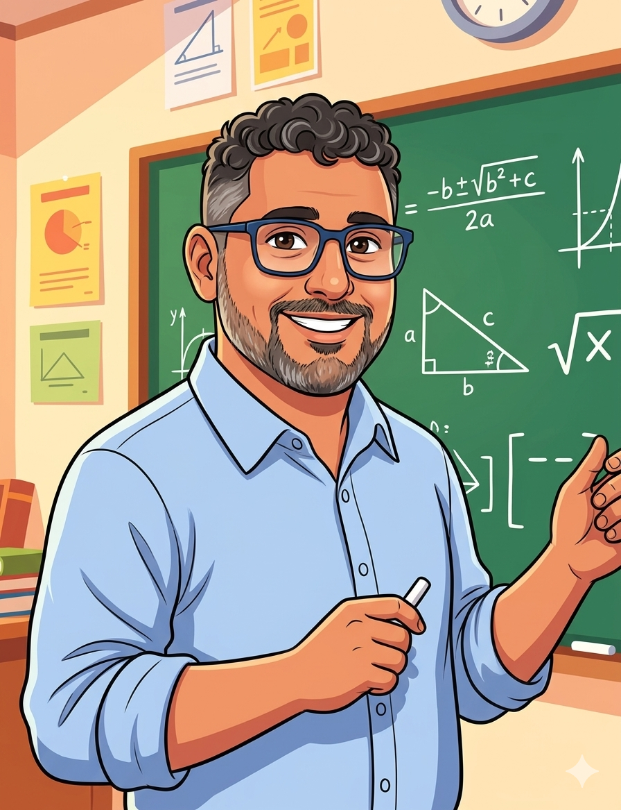

שיעורים פרטיים במתמטיקה · חדרה ובזום
נעים להכיר,
אני בועז חזן.
מורה ורכז מתמטיקה בחטיבה ובתיכון, עם ניסיון גם בהוראה ובחינוך ביסודי. בשיעורים הפרטיים אני עוזר לתלמידים להבין את החומר, לחזק את הביטחון וללמוד להתקדם בעצמם.
מהיסודי ועד י״ב, כולל 3 ו־4 יחידות.
מגיע לבית התלמיד בחדרה, ומלמד בזום בכל הארץ.

קצת עליי
מההייטק
אל הכיתה.
B.Sc
במדעי המחשב ומתמטיקה
תעודת הוראה
במתמטיקה
שמי יהונתן בועז חזן, אבל בדרך כלל פשוט קוראים לי בועז. אני גר בחדרה, נשוי לויויאן ואבא לשלושה.
לפני שהגעתי להוראה עבדתי שש שנים בפיתוח תוכנה. בתקופת הקורונה התחלתי להתנדב וללמד תכנות לילדים בבית ספר יסודי, וגיליתי כמה אני אוהב ללמד. משם המשכתי להכשרה להוראה, ללימוד מתמטיקה ולחינוך כיתות ה׳ ו־ו׳ בבית ספר גורדון בכפר סבא.
היום אני מורה ורכז מתמטיקה ומדעי המחשב ביש״י חדרה, בית ספר שש־שנתי. אני עובד גם עם תלמידי המצוינות ועמ״ט, ומלווה מורים בשימוש בדיגיטל במסגרת STEM ותוכנית 720 של משרד החינוך. בתוכנית 720 אני המורה הראשי ומלווה המורים בבית הספר.
אני אוהב לחבר בין הוראה לטכנולוגיה: מפתח חומרי לימוד ומקדם בבית הספר פרויקטים של גיימינג ופיתוח, תלת־ממד ומציאות מדומה. המטרה שלי היא לעורר סקרנות, להתאים את הלמידה לתלמיד ולעזור לו לרצות לנסות ולהתקדם גם לבד.
מחוץ לבית הספר אני אוהב לבשל ולאפות, לטייל ולשחק משחקי קופסה. את אותה הסבלנות והסקרנות אני משתדל להביא גם לשיעורים.
בשיעור איתי
מתחילים במקום
שבו התלמיד נמצא.
אני מבקש לראות מה לומדים בכיתה, איך התלמיד ניגש לתרגיל ובאיזה שלב הוא נתקע. משם אנחנו עובדים עם הסברים, דוגמאות ותרגול שמתאימים לו.
יש מקום לשאלות, לטעויות ולדרך אחרת. חשוב לי שהתלמיד יוכל להסביר את הפתרון במילים שלו, ולא רק להעתיק את השלבים.
אפשר לפנות לליווי קבוע, לסגירת פערים או להכנה למבחן. נבדוק יחד מה מתאים ומה פנוי ביומן.
מהורים של תלמידים
מהחוויה שלהם
הכרנו את בועז כשהילד היה ביסודי. בזכותו היום הילד לומד 5 יח מתמטיקה. הבסיס שכל כך חשוב לא התפספס.
ההמלצה מתארת ליווי בתקופת היסודי. כיום השיעורים הפרטיים בתיכון הם ברמות 3 ו־4 יחידות.
מעמיתים לעבודה
על העשייה החינוכית שלי
הכרתי את בועז בתיכון שבו עבדנו ביחד כמורים
היה לנו חיבור טוב ברמה האישית וברמת החזון
שנינו ראינו את הערך המוסף שניתן להביא למערכת החינוך באמצעות פיתוח טכנולוגיות חינוכיות משלימות
הראיתי לבועז מערכת שהתחלתי לפתח ובועז נדלק על הרעיון ומשם התחילה דרכנו כשותפים
לבועז יש יכולת לקחת רעיון שהוא מתחבר אליו, להשקיע בו שעות רבות, לפתח אותו, להוסיף לו את הטאץ׳ האישי שלו ולדחוף אותו קדימה - בפיתוח, בשיווק ובהטמעה
השיעורים הפרטיים · מתמטיקה בלבד
השיעורים והמחירים
כל שיעור נמשך 45 דקות. השיעורים הפרטיים הם במתמטיקה בלבד.
| 45 דקות | בבית התלמיד בחדרה בלבד | בזום בכל הארץ |
|---|---|---|
| יסודי | 130 ₪ | 100 ₪ |
| חטיבה ותיכון 3 ו־4 יח״ל בתיכון | 150 ₪ | 120 ₪ |
המועדים מתואמים לפי היומן המעודכן. שיעורים בבית התלמיד מתקיימים בחדרה בלבד.
חומרי הלימוד שלי
אפשר להתחיל
גם בתרגיל קטן.
אני מפתח הסברים, תרגילים ופעילויות לתלמידים. באתר החומרים שלי אפשר למצוא תוכן לפי שלב לימודים ונושא.
חלק מהתכנים במאגר פתוחים, ובחלקם נדרשת הרשמה.
כמה דברים שכדאי לדעת
לפני שקובעים
למי מתאימים השיעורים?
לתלמידי יסודי, חטיבת ביניים ותיכון עד י״ב. בתיכון אני מלמד 3 ו־4 יחידות. השיעורים הפרטיים כאן הם במתמטיקה בלבד.
איפה נפגשים?
אני מגיע לבית התלמיד בחדרה בלבד. אפשר ללמוד גם בזום מכל הארץ.
צריך להתחייב לסדרה של שיעורים?
אפשר לפנות לגבי ליווי קבוע או שיעור לפי צורך. נבדוק יחד התאמה וזמינות לפי היומן המעודכן.
איך קובעים מועד?
מתחילים בפנייה קצרה: הכיתה, הנושא שבו צריך עזרה, והעדפה לשיעור בבית או בזום. בודקים יחד התאמה ומועד פנוי ביומן.
יצירת קשר
נבדוק יחד
מה מתאים לכם.
נבדוק מה צריך לחזק, איזה סוג שיעור מתאים ואילו מועדים פנויים ביומן.
אפשר גם להתקשר: 052-361-6310